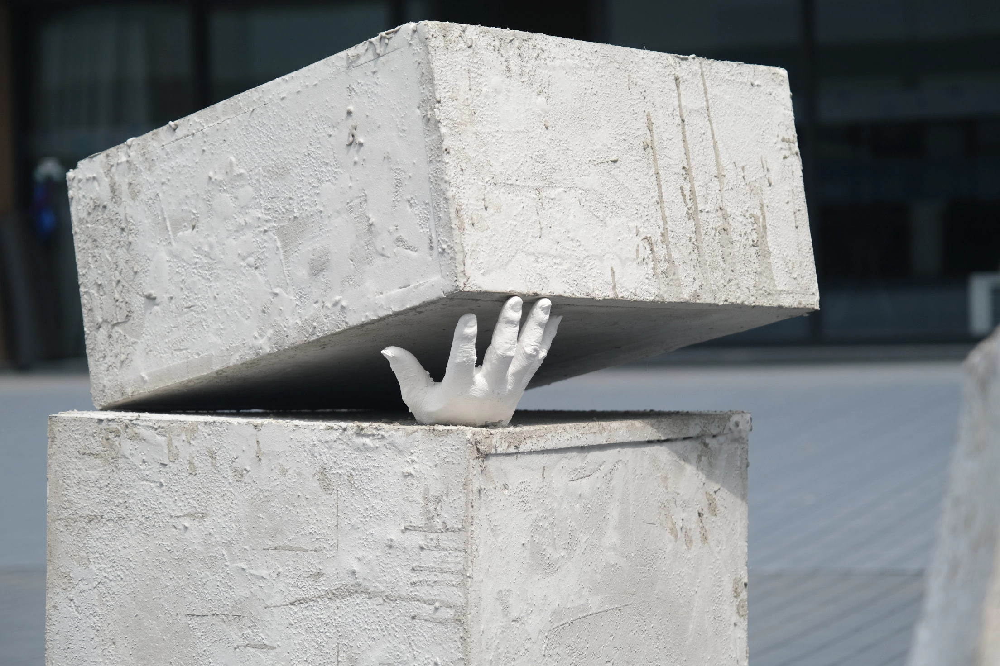
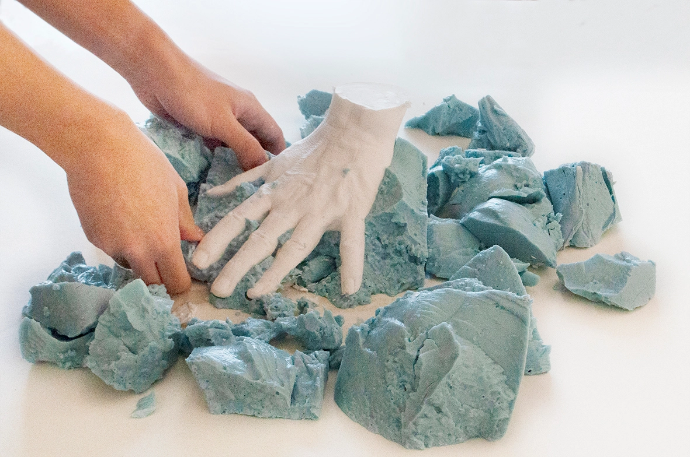
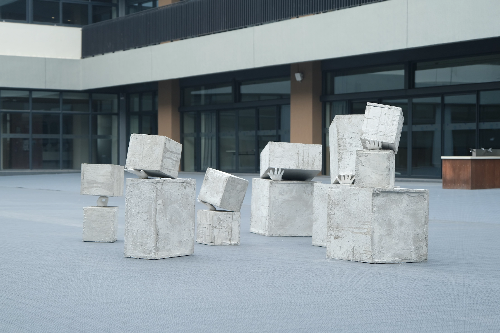
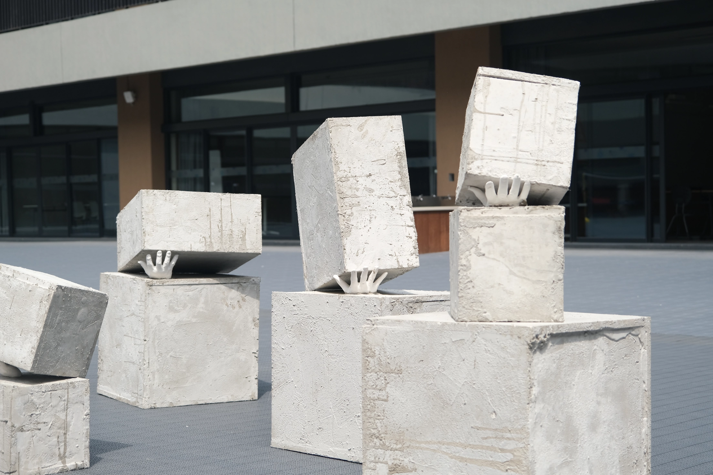

Taking the opportunity of the construction of a new campus at our school, I became aware of the group of construction workers in China. Through research, I found that there is an invisible barrier between builders and users under the same roof. To address this, I created an installation composed of workers' handprints and symbolic cement cubes representing architecture.
In the artwork, handprints from 20 workers are embedded at the joints of the structure, lifting the concrete blocks above in an upward-reaching configuration. It symbolizes their strength, like the joints of a building, is a life distinct from steel and cement, integrated within it but also confined by it. The patterns on the workers' hands are the imprints of their existence, but we often fail to remember and see the full scope of who they are.
2020-2023 | Installation Art